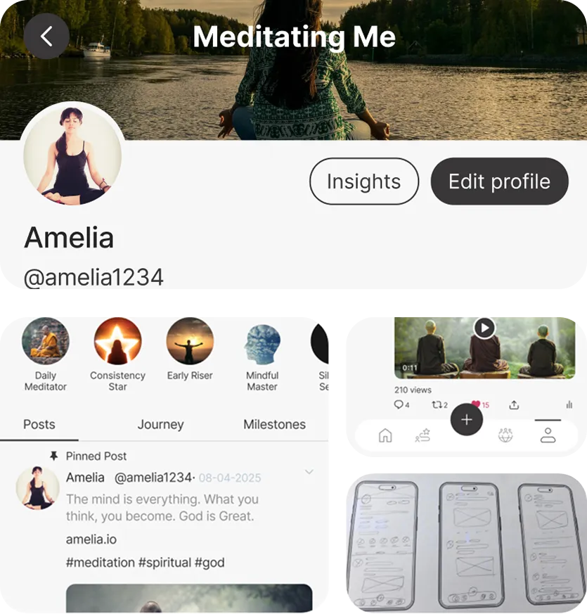
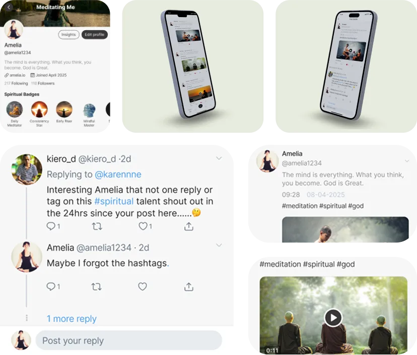

Previous
-
01.
Project Overview
SmrkAura is a revolutionary spiritual social media app that creates a dedicated community space for meditation enthusiasts and spiritual seekers. Our platform combines the connectivity of social networking with the mindfulness of spiritual practice, offering users a sacred digital space to connect, share, and grow together on their spiritual journeys.
The app transforms traditional social media concepts by focusing them entirely on meditation, spirituality, and conscious living. Users can build meaningful connections with like-minded individuals while accessing premium spiritual content, guided meditations, and exclusive teachings from spiritual leaders and practitioners.
Core Components Delivered
Spiritual Social Network - Connect with meditation and spirituality practitioners worldwide
Friend Connections - Build meaningful relationships with fellow spiritual seekers
Premium Content - Pay-per-access spiritual teachings, meditations, and exclusive content
Spiritual Posts - Share meditation experiences, insights, and spiritual journey updates
Mindful Tweeting - Short-form spiritual wisdom sharing and daily affirmations
Content Creation - Tools for spiritual teachers and practitioners to share knowledge
Community Features - Groups, forums, and discussion spaces for spiritual topics
Meditation Integration - Built-in meditation timers, progress tracking, and guided sessions
SmrkAura creates the first dedicated social platform where spirituality and social connection merge to support personal growth and collective consciousness elevation.
-
02.
Process & Challenge
Creating SmrkAura required understanding the unique needs of spiritual communities while building social media functionality that supports mindful interaction rather than the addictive patterns of traditional social platforms.

Building brand identity with logo, website, and social media design.
Using content and ads to boost brand engagement.
Start Agenda for any help
The biggest challenge was creating social media features that encourage mindful engagement rather than mindless scrolling. Every feature needed to support spiritual growth and genuine connection while maintaining the convenience and connectivity users expect from social platforms.
Payment integration for premium spiritual content required careful balance between accessibility and supporting spiritual teachers. The platform needed to honor both free spiritual sharing traditions and the need for teachers to sustain their work.
Content moderation required understanding spiritual contexts while maintaining respectful, inclusive spaces for diverse spiritual traditions. Friend connections needed to facilitate genuine spiritual support rather than superficial social validation.
 -
03.
Summery
SmrkAura successfully delivers the world's first dedicated spiritual social media platform, creating sacred digital space where meditation practitioners and spiritual seekers can connect, learn, and grow together through mindful social interaction and premium spiritual content access.
Platform Achievement: The innovative combination of social networking with spiritual focus creates deeper, more meaningful online connections while providing sustainable income opportunities for spiritual teachers and content creators through integrated payment systems.
-
04.
Delivered Solutions
A comprehensive spiritual social media app featuring friend connections, premium content access, mindful posting and sharing capabilities, meditation integration, and community features - all designed specifically for the global spiritual and meditation community's unique needs and values.